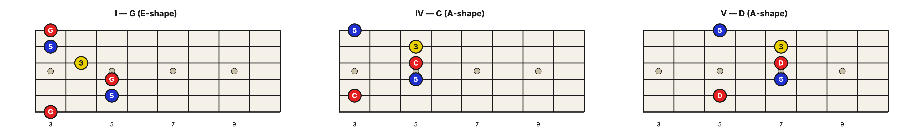
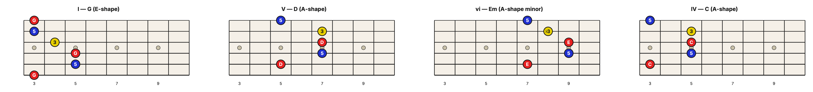

Level 2 · Chapter 29
The Fretboard: The Numeral Becomes a Shape
In the last chapter you learned that a progression written in Roman numerals is the same idea in every key. I–IV–V is C–F–G in C, G–C–D in G, and D–G–A in D. On a piano, transposition means finding the new key's notes under a different pattern of white and black keys.
The guitar is different.
Because your chord shapes are movable, one practical E-shape/A-shape realization can turn a numeral into a fretboard pattern at fixed distances from home. Learn this progression pattern once, and you can move it to another key by sliding your hand. The numeral itself remains a harmonic role; the shapes here are one efficient way to realize that role on guitar.
The two shapes you already own
You need only the two movable barre chords from before. The E-shape barre puts the root on the low E string. The A-shape barre puts the root on the A string. Both slide: move the grip up one fret and every note inside it goes up one half step, so the chord just changes name. As "Barre Chords Are Triad Voicings" showed you, an E-shape barre at the 3rd fret is a G chord, and the exact same grip at the 5th fret is an A chord. The shape is the packaging. The pitch is the product.
So the plan is simple: build I–IV–V out of those two shapes, and let the tuning of the strings hand us the distances between them.
Building I–IV–V from two shapes
Put I on the low E string as an E-shape barre. Call its fret n. In the key of G, n is the 3rd fret, so I is G.
Now IV. IV is a Perfect 4th above the root, which is 5 half steps. Here is the gift the guitar gives you: the A string is already tuned a Perfect 4th above the low E string. So the note straight above your root, same fret, next string up, is IV. Play it there as an A-shape barre, at that same fret n. In G, that is a C chord at the 3rd fret.
Here is the part that surprises people. I and IV live at the same fret. You do not travel up the neck at all; you only trade the E-shape for the A-shape, without sliding.
Now V. V is a Perfect 5th above the root, which is 7 half steps. The A string already gave you 5 of those at fret n, so you need just 2 more. Slide the A-shape up 2 frets, to fret n+2. In G, that is a D chord at the 5th fret.
Notice that we never memorized those distances. Count them out on the A string and they simply appear: fret n is 5 half steps above the low E root (that is IV), and fret n+2 is 7 (that is V). The fretboard did the arithmetic for us.

Here is the whole cluster written out, in the key of G:
| Numeral | Shape | Root string | Fret | Chord |
| I | E-shape | low E | n = 3 | G |
| IV | A-shape | A | n = 3 | C |
| V | A-shape | A | n+2 = 5 | D |
Now slide it: the same shapes in a new key
Here is the payoff. Look back at that table and notice what it never says: it never names a single note as a note. It names shapes and fret distances. The "3" is only there because we chose G. So to play I–IV–V in a different key, you do not learn anything new. You move the whole pattern to a new home fret.
Slide everything up 2 frets, so I now sits at the 5th fret. Count up the low E string to find the new home: E, F (1), F♯ (2), G (3), G♯ (4), A (5). The 5th fret is A, so I is now A, IV is D, and V is E. That is I–IV–V in the key of A, and you played it with the same three grips at the same three distances, just two frets higher.
Same shapes. New key.
| Numeral | Shape | Fret (key of A) | Chord |
| I | E-shape | 5 | A |
| IV | A-shape | 5 | D |
| V | A-shape | 7 | E |
This is what guitarists mean by transposing. On most instruments, changing key means relearning the fingering. On the guitar, it means moving your hand. The pattern of the progression lives in the distances between the shapes, and those distances never change.
The four-chord loop is a shape too
The four-chord loop from the last chapter, I–V–vi–IV, works the very same way. It only adds one new grip: the minor shape. vi is a minor chord a Major 6th above the root, which is 9 half steps. On the A string that lands at fret n+4 (5 from the tuning, plus 4 more), played as an A-shape minor barre.
Here is the loop as one movable pattern in the key of G:
| Numeral | Shape | Root string | Fret | Chord |
| I | E-shape major | low E | 3 | G |
| V | A-shape major | A | 5 | D |
| vi | A-shape minor | A | 7 | Em |
| IV | A-shape major | A | 3 | C |

Your hand stays inside a five-fret span, from the 3rd fret to the 7th, and every chord is a barre shape you already know. And because it is all shapes and distances, it slides. Move the entire span up 2 frets, to a home fret of 5, and you are playing the same loop in the key of A: A–E–F♯m–D.
Hear it
Play the G loop as written, four even strums per chord, around and around until it feels automatic. Then, keeping the pattern exactly the same, shift your whole hand up 2 frets and play it again. Listen closely: it is unmistakably the same song, just higher. The melody of a progression lives in the distances between its chords, not in the chords themselves. That is why a slide is all it takes to move a whole song into a new key.
Try it yourself
Use the E-shape and A-shape grips to play these in a key we have not tabbed out yet. Write the shape and the fret for each chord.
- I–IV–V in the key of A (start I on the low E string at the 5th fret).
- The four-chord loop I–V–vi–IV in the key of A.
Answer key
- I–IV–V in A: I = A (E-shape, fret 5) · IV = D (A-shape, fret 5) · V = E (A-shape, fret 7).
- I–V–vi–IV in A: I = A (E-shape, fret 5) · V = E (A-shape, fret 7) · vi = F♯m (A-shape minor, fret 9) · IV = D (A-shape, fret 5).
So here is the whole trick in one line: with these E-shape and A-shape choices, a Roman-numeral progression becomes a repeatable set of fret distances, and a new tonic gives that same pattern new chord names. Learn the harmonic pattern once, then verify it in each new key by locating and naming the roots.